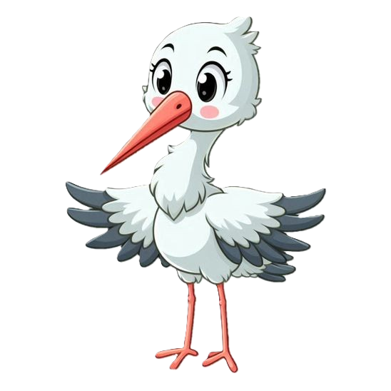

Bebes en peligro es un proyecto que se realizo con tiempo, dedicacion y esfuerzo por 3 personas que aman lo que hacen, 3 estudiantes que dia a dia dieron un extra para poder conseguir el resultado que ahora tienen el honor de compartir con toda la comunidad de Prepa 6, esperan que este sea de su agrado y a su vez que los motive a no dejar de lado nuestro increible Estudio Tecnino en Computacion. Ellos son: Cuevas Garduño Daila Jazmín, Martínez Sevilla Evelin Guadalupe, Méndez Bobadilla Angel Leonardo.
La historia de este juego comienza con nuestro personaje principal: una cigüeña llamada Lili. Ella tiene una larga y complicada historia que contar, y todo esto se remonta cuando ella migró a la región de Alsacia. Aquel lugar era hermoso, pero también potencialmente mortal debido a sus altas temperaturas de frío durante el invierno que era difícil para ella soportarlo incluso cuando ella anidaba en lugares altos como tejados, postes y campanarios, pero esto cambió al momento de regresar a la ciudad. Cuando llegó, notó que dentro de una casa había un nuevo integrante en la familia, era un bebé; los vecinos al verla llegar dijeron en forma burlesca que la cigüeña había traído a la bebé. La pareja solo río, pero dentro de Lili, esto la conmovió demasiado. Ella sabía claramente dónde se encontraban aquellos bebés y que así mismo las devolvería con una nueva familia, por lo que se dirigió hacia aquel espacio lleno de bebés que esperaban su turno de ser llevados a su hogar, y en este mismo lugar otras cigüeñas estaban dispuestas a reunirse con Lili para dejar a los bebés a sus nuevos hogares. Desde aquel momento, Lili entendió que su destino era ayudar a llevar a cada bebé a su nuevo hogar y que, junto a otras cigüeñas, emprenderá viajes llenos de desafíos, donde deberá superar obstáculos y recorrer varios lugares, pero todo con el fin de cumplir su misión.
Una vez que ya sabemos un poco mas sobre la historia del juego tenemos que saber cuales son nuestros objetivos por que y para que estamos en esta increible mision.Entre ellos se nos dictaminan los diguitentes Fomentar en el jugador valores como la responsabilidad, la empatía, la perseverancia y la solidaridad a través de la experiencia de guiar a Lili en su misión de llevar a cada bebé a su hogar, y que mediante los retos y obstáculos que se presentan durante el recorrido, se busca que el jugador comprenda la importancia de ayudar a los demás, cumplir con sus compromisos y no rendirse ante las dificultades. De esta manera, el juego no solo ofrece entretenimiento, sino también una formación en actitudes positivas aplicables a la vida cotidiana.
El juego se construye de 4 niveles, cada uno de ellos comprende una parte unica y esencial del juego a traves de los cuales se tienen que atravesar distintos obstaculos y a su vez se pondran a prueba dos de los valores mas importantes como lo son la paciencia y adaptabilidad. Al comienzo del videojuego nos encontramos con el primer nivel: un bosque místico que transmite una tranquilidad y una sensación de paz al estar entre tanta vegetación. Esto es lo que pensaría cualquiera, sin embargo, Lili se tendrá que enfrentar ante una población de brujas, las cuales están más que dispuestas a quitarle el bebé a la cigüeña y ella misma debe de esquivarlas para evitar que esto suceda. Al superar la primera etapa, pasará al segundo nivel, donde el personaje se encuentra con un campo que presenta un nuevo obstáculo, una lluvia torrencial que contaba con truenos. La cigüeña tendrá que esperar a que los rayos caigan para después continuar su camino. Finalmente tenemos el tercer nivel: un llano que se extiende hacia el horizonte, con una luz cálida del atardecer, lo que genera una sensación de calma. Aunque parece un lugar sin peligros, Lili tendrá que esquivar a un grupo de cuervos negros que intentarán atacarla a ella y al bebé, evitando acercarse para poder cumplir su misión. Después de estos niveles, el bebé finalmente llega a las puertas de su nuevo hogar, donde es recibido por una pareja que lo esperaba con ansias. NOTA: Cuando la cigüeña choque con un obstáculo, volverá a comenzar el juego desde el primer nivel.